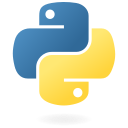
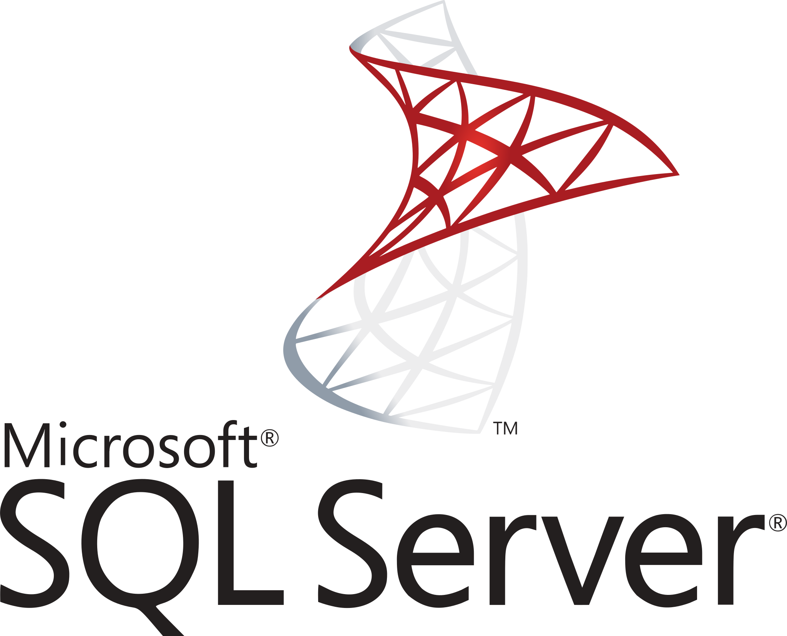
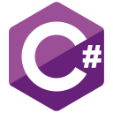

Data Engineer and Python Developer with nearly 6 years of experience at Accenture designing, building, and automating scalable data solutions on Google Cloud Platform (GCP), alongside almost 6 years of academic experience teaching Python and programming at the National Technological University (UTN).
Currently pursuing a B.Sc. in Data Science while working on enterprise-scale Data Lake and analytics initiatives, focusing on data ingestion, ETL/ELT pipelines, BigQuery optimization, and CI/CD automation. Always open to connecting with fellow data professionals and discussing challenging 100% remote opportunities in Data Engineering, Python Development, and Cloud Architecture.
★ Top 5 Skills:

Python
Google BigQuery
 Google Cloud Platform (GCP)
Google Cloud Platform (GCP)

SQL
🏗️ Terraform
☁️ Data & Cloud (GCP)
GCP
BigQuery (DDL/DML)
ETL / ELT Pipelines
Cloud Data Lakes
Data Modeling
Apache Hive Migration
 Pandas & NumPy
Pandas & NumPy
🐍 Programming & Databases
Python
SQL / T-SQL
 MySQL / SQLite
MySQL / SQLite

C#
C
Java
JavaScript
Django & REST APIs
🚀 DevOps, IaC & AI
Terraform (IaC)
Azure DevOps
CI/CD Pipelines
YAML Orchestration
Git & GitHub
Linux / Bash
🤖 Agentic AI & LLMs
Agile / Scrum
🏢 Accenture Argentina
Jan 2021 – Present · ~6 yrs · Remote
CIO — SEA [Self-Enable Analytics] & Finance Program Team
- Lead data engineering initiatives for the Finance and Self-Enable Analytics (SEA) programs on Accenture's enterprise AIA Data Lake (Google Cloud Platform).
- Design, optimize, and maintain complex BigQuery schemas (DDL/DML), data models, and curated analytical tables to power executive reporting and BI visualization tools.
- Develop Python automations and end-to-end ETL/ELT pipelines to streamline data ingestion, validation, and transformation workflows in an agile environment.
- Build and maintain automated CI/CD pipelines in Azure DevOps and orchestrate deployment workflows using YAML and Terraform.
Python
Google BigQuery
GCP
ETL/ELT
Terraform
Azure DevOps CI/CD
YAML
CIO — SEA [Self-Enable Analytics] Team
- Engineered and scaled cloud data assets within the CIO Self-Enable Analytics (SEA) program on Google Cloud Platform (GCP).
- Implemented automated ETL/ELT data pipelines using Python and SQL (BigQuery) to ingest, clean, and curate large-scale datasets for downstream analytics.
- Managed GCP infrastructure, DDL/DML versioning, and deployment pipelines via Terraform, YAML orchestration, and Azure DevOps CI/CD.
GCP
BigQuery
Python
Terraform
Azure DevOps
CIO — AIA Migration Team
- Executed the end-to-end migration of legacy data assets from Apache Hive to Google Cloud Platform (BigQuery) as part of the CIO AIA Migration Team, successfully completing the full project lifecycle.
- Built Python automation scripts and YAML-orchestrated workflows to validate migrated tables, ensuring data integrity and consistency across environments.
- Configured CI/CD pipelines in Azure DevOps and managed GCP environment resources.
Apache Hive ➔ BigQuery
Python
YAML
CI/CD
CIO — Self-Service Analytics Team
- Supported the CIO Self-Service team in data analysis, table curation, and initial Hive-to-BigQuery migration tasks on Google Cloud Platform.
- Created and maintained DDL/DML scripts in BigQuery and developed Python/Pandas utilities to automate routine data processing tasks.
Python
Pandas
BigQuery SQL
🎓 Universidad Tecnológica Nacional (UTN)
Jan 2021 – Aug 2026 · 5 yrs 8 mos · Remote
Course: Programming I [Python]
- Led lectures and hands-on coding sessions for university programming students, covering core Python fundamentals, data structures, algorithms, and software design best practices.
- Designed curriculum materials, practical coding exercises, and evaluation projects tailored to industry standards.
- Mentored students and coordinated academic assessments alongside teaching assistants.
Courses: Programming I [Python] & Laboratory I [Python]
- Conducted practical lab sessions and live coding exercises in Python, guiding students through debugging, problem-solving, and clean code practices.
- Collaborated with the lead professor to develop coursework, grade exams, and continuously modernize syllabus exercises.
Course: Data Processing Systems (SPD)
- Assisted in teaching computer architecture fundamentals, Boolean algebra (Karnaugh maps, Hamming code), digital logic circuits, and microcontroller programming with Arduino (C/C++).
- Prepared laboratory workspaces, practical assignments, and exam evaluations.
🛠️ Earlier Technical & Commercial Experience (2014 – 2021)
2 Roles
- Hardware diagnostics, custom PC assembly, OS installation/administration (Linux & Windows), disk partitioning, backups, and user-level security support.
- Acted as the commercial and technical nexus between HP and retail accounts, delivering weekly KPI reports (Excel/PPT) and winning the Best Exhibition Award in the hypermarket channel.
Jul 2026 – Dec 2028 · In Progress
B.Sc. in Data Science (Licenciatura en Ciencias de Datos)
Universidad de la Ciudad de Buenos Aires (UNICABA)
Data Science, Machine Learning, Statistical Modeling, Big Data Analytics & Information Technology.
Jan 2020 – Jul 2024 · Graduated
University Degree in Computer Programming
Universidad Tecnológica Nacional (UTN)
Software Engineering, Object-Oriented Programming (Python, Java, C#, C), Relational Databases (SQL), and Data Structures.
2014 · Graduated
PC Assembly & Hardware Technician
Universidad Nacional de Quilmes (UNQ)
Computer Architecture, Hardware Diagnostics, Operating Systems, and Local Networking.